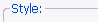

Le panneau Numération permet de raffiner les réglages des opérations de numération.
[Style]
[Classement]
[Compteur]

Toutes les options contenues dans ce groupe modifient l'apparence du résultat, pas
la manière dont la valeur numérique est calculée.
Utiliser des chiffres normaux, le style initial d'une séquence numérique. Par défaut la
case Rembourrer est cochée afin de régulariser le classement. Il est possible d'utiliser
n'importe quel caractère pour le rembourrage.
Ici il est possible de raffiner les options du rembourrage de style Numérique. Par défaut,
le Rembourrage automatique est utilisé pour donner aux numéros la même longueur en fonction
du nombre total d'objets à renommer. Une autre option est d'avoir le Rembourrage fixe.
Utilisez cette option pour numéroter alphabétiquement. Par défaut, le Rembourrage automatique
est utilisé pour donner aux chiffres la même longueur en fonction du nombre total d'objets à renommer.
Il est possible d'utiliser des majuscules ou des minuscules.
Utilisez cette option pour numéroter par chiffres romains. Attention ! Il y a une limite avec ce système :
toutes valeurs doivent être entre 1 et 4999, sinon une erreur se produira.
Normalement les chiffres romains sont en majuscules, mais il est possible de les mettre en minuscules en cochant
cette case.
Ces options gouvernent l'ordre et le classement d'objets lorsqu'une numération est utilisée.

Permet de changer l'ordre dans lequel les objets sont numérotés. Ascendant est
dans l'ordre normal : 1,2,3,4, Descendant en est l'inverse : 4,3,2,1.
Manuellement ordonne les objets dans l'ordre qu'ils sont sélectionnés dans
la zone de sélection du panneau Ramasseur, et permet ainsi de les classer manuellement.
Notez que si le bouton tous, dans le panneau Ramasseur, est utilisé pour sélectionner les
objets avec l'option Manuellement, les objets seront ordonnés en ordre ascendant.
Si ordonner tous les objets est mis à Manuellement, il devient alors possible de cliquer un objet
dans la zone de prévisualisation pour le sélectionner, puis de le déplacer en utilisant ces boutons.
De gauche à droite, déplacer vers : le haut par 1, le bas par 1, le haut par 5,
le bas par 5, la première position, la dernière position.
Toutes les options contenues dans ce groupe modifient la manière dont la valeur numérique est
calculée, pas le style des chiffres.
La valeur initiale pour la numération. Un numéro sera converti en chiffre romain ou
alphabétique si ces option sont utilisées.
Si Départ = nombre d'objets est coché, la valeur initiale est calculée automatiquement
en fonction du nombre d'objets à renommer.
Spécifier la direction du compte. Les valeurs négatives sont permises, mais une erreur se produira
si des chiffres romains ou alphabétiques sont utilisés.
Spécifier par quelle quantité le compte changera. Si Compter par répertoire est coché, le
compte changera seulement quand le répertoire change.
Spécifier si le compteur reprend du début après un certain nombre d'objets (mais pas
la valeur numérique du compte). '0' signifie 'ne pas réinitialiser'. Peut être utilisé avec
Réinitialiser à chaque répertoire.
Quand utilisé avec l'option Cheminer du Ramasseur, Réinitialiser à chaque
répertoire reprendra le compte du début chaque fois que le répertoire change. Utile pour
rémunérer quelques dossiers d'albums .mp3 en une seule fois.